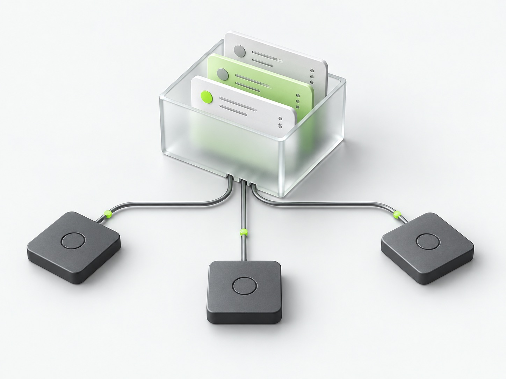

Retrieval you can inspect
Your agent interprets the request. The store runs structured filters and lexical search. Search returns candidates; get returns the full object.
Read the architectureOpen source. Local first.
A shared notepad for your AI agents. Save in one conversation. Find it from another.

Connect your agents to the same store. Your saved information belongs to you, not to a chat thread.
An example, not a live chat
“Save this to my notes: the orchid launch checklist is ready.”
store_object writes a note to your store.
“Find my note about the orchid launch.”
search_objects finds it. get_object reads the full value.
The optional routing skill helps choose tools. Only a successful tool response confirms a save.
{
"key": "notes/orchid-launch",
"kind": "note",
"labels": ["orchid", "launch"],
"value": {
"text": "The launch checklist is ready."
}
}Your payload, inside a predictable envelope. The store adds IDs, versions and timestamps. Writes also provide searchable text.
No embeddings. No RAG pipeline. No silent remembering. Just five operations over objects you can inspect.
Your agent interprets the request. The store runs structured filters and lexical search. Search returns candidates; get returns the full object.
Read the architectureSQLite storage, a local CRUD dashboard, and MCP adapters for stdio or HTTP. The core does not depend on an AI provider.
Back up your storeFrom clone to your first save
Two local services. One persistent SQLite volume. No database credentials or model API key needed by the store.
git clone https://github.com/darkrishabh/simple-agent-store.git
cd simple-agent-store
docker compose up --build -d --waitOpen your dashboardhttp://127.0.0.1:4310
Connect your MCP clienthttp://127.0.0.1:4311/mcp
Requires Docker with Compose v2. Prefer native Node.js? Follow the Node.js setup. Stop with docker compose down; the volume stays.
Bundled Codex and Claude Code plugins include the local MCP connection and save/retrieve skill. Other MCP clients can connect directly.
Connect your agentsNo. Nothing is saved implicitly. Agents write explicit objects when you ask them to, and retrieve them using tools. There is no hidden memory extraction or knowledge graph.
The store supports structured filters, SQLite FTS5, label prefixes, and phone/email/URL shape matching. It is lexical, not semantic: paraphrases and typos can miss. Agents can retry with shorter queries or synonyms. Complete lists use cursor pagination.
This alpha is designed for local, single-user use. The dashboard has no login. The core does not include OAuth, tenant isolation, rate limiting or managed backups. A development MCP tunnel is not a production hosted service.
No. Plugins and server instructions help with tool selection, but client permissions, approvals and model behavior still apply. Verify the tool result or inspect the dashboard. Browser-hosted agents cannot access your computer's localhost directly.
The core is open source under Apache-2.0. You can inspect, self-host and contribute. Read the license for its terms.